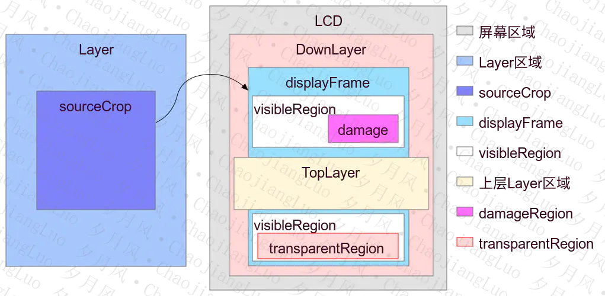

命令
使用名称查看 sf dump 的命令是 adb shell dumpsys SurfaceFlinger，可以把所有sf信息打印下来。
调用 SurfaceFlinger::dumpAllLocked。
另外还可以添加参数来只打印我们需要的信息，比如：adb shell dumpsys SurfaceFlinger --displays。
支持的参数在下面的方法中定义：
status_t SurfaceFlinger::doDump(int fd, const DumpArgs& args, bool asProto) {
std::string result;
IPCThreadState* ipc = IPCThreadState::self();
const int pid = ipc->getCallingPid();
const int uid = ipc->getCallingUid();
if ((uid != AID_SHELL) &&
!PermissionCache::checkPermission(sDump, pid, uid)) {
StringAppendF(&result, "Permission Denial: can't dump SurfaceFlinger from pid=%d, uid=%d\n",
pid, uid);
} else {
static const std::unordered_map<std::string, Dumper> dumpers = {
{"--comp-displays"s, dumper(&SurfaceFlinger::dumpCompositionDisplays)},
{"--display-id"s, dumper(&SurfaceFlinger::dumpDisplayIdentificationData)},
{"--displays"s, dumper(&SurfaceFlinger::dumpDisplays)},
{"--edid"s, argsDumper(&SurfaceFlinger::dumpRawDisplayIdentificationData)},
{"--events"s, dumper(&SurfaceFlinger::dumpEvents)},
{"--frametimeline"s, argsDumper(&SurfaceFlinger::dumpFrameTimeline)},
{"--hwclayers"s, dumper(&SurfaceFlinger::dumpHwcLayersMinidumpLocked)},
{"--latency"s, argsDumper(&SurfaceFlinger::dumpStatsLocked)},
{"--latency-clear"s, argsDumper(&SurfaceFlinger::clearStatsLocked)},
{"--list"s, dumper(&SurfaceFlinger::listLayersLocked)},
{"--planner"s, argsDumper(&SurfaceFlinger::dumpPlannerInfo)},
{"--scheduler"s, dumper(&SurfaceFlinger::dumpScheduler)},
{"--timestats"s, protoDumper(&SurfaceFlinger::dumpTimeStats)},
{"--vsync"s, dumper(&SurfaceFlinger::dumpVsync)},
{"--wide-color"s, dumper(&SurfaceFlinger::dumpWideColorInfo)},
};
- "--displays"：只打印 Display 相关信息
- "--hwclayers"：只打印 HWC Layer相关信息
- "--vsync"：只打印 VSYNC 相关信息
基础知识
Layer 信息
图层的各种属性：

- Layer区域和屏幕区域就是Layer和屏幕本身的大小区域；
- sourceCrop 是对Layer剪切后获取的区域；
- displayFrame是对Layer 显示区域表示sourceCrop在屏幕上的显示区域（过程可能缩放）。
- visibleRegion 可见区域，displayFrame没有被上层Layer盖住的部分就是可见区域。
- coveredRegion被上层Layer覆盖的区域。
- damageRegion 受损区域/更新区域，表示Layer内容变了，重新合成时只去合成damageRegion区域。
- transparentRegion透明区域看到的是底层Layer的内容。
分析
Vsync 信息
Sync configuration: [using: EGL_ANDROID_native_fence_sync EGL_KHR_wait_sync]
Scheduler
使用 adb shell dumpsys SurfaceFlinger --scheduler 可以单独打印这部分信息。
Scheduler:
Features
PresentFences=true
KernelIdleTimer=false
ContentDetection=true
Policy
pacesetterDisplayId=4630947064936706947
layerHistory={size=119, active=1}
touchTimer=3000.000 ms
displayPowerTimer=400.000 ms
FrameRateOverrides=none
debugDisplayModeSetByBackdoor=false
ScreenOff: 1d17:28:07.825
120.00 Hz: 0d01:28:01.003
60.00 Hz: 0d00:02:19.554
app phase: 1000000 ns SF phase: 1000000 ns
app duration: 16666666 ns SF duration: 15666666 ns
early app phase: 1000000 ns early SF phase: 1000000 ns
early app duration: 16666666 ns early SF duration: 15666666 ns
GL early app phase: 1000000 ns GL early SF phase: 1000000 ns
GL early app duration: 16666666 ns GL early SF duration: 15666666 ns
HWC min duration: 0 ns
present offset: 0 ns VSYNC period: 16666666 ns
VSYNC period: 16666666 ns 代表的就是一个 VSYNC 周期，当前屏幕刷新率是 60 HZ，因此一个 VSYNC 周期是 16666666 ns。
app phase 和 SF phase 指的是 app 和 sf 的相位。
hw vsync是硬件产生的。
app vsync是基于hw vsync加上一个相位差app phase软件产生的。
sf vsync是基于hw vsync加上一个相位差sf phase软件产生的。
app phase 和SF phase 就是正常情况下使用的。
early app phase 和 early SF phase 是在切换屏幕帧率的时候使用的。
GL early app phase 和 GL early SF phase 是在SF使用GPU合成的时候使用的。
present offset: Vsync Offset ，VSYNC_APP 和 VSYNC_SF 之间 的相位差（SF phase - app phase）的值。
events
使用 adb shell dumpsys SurfaceFlinger --events可以单独打印这部分信息。
app: state=VSync VSyncState={displayId=4630947064936706947, count=42654}
mWorkDuration=16.67 mReadyDuration=15.67 last vsync time 19.45ms relative to now
pending events (count=0):
connections (count=41):
Connection{0xb40000795b3a1d90, VSyncRequest::None}
......
Connection{0xb40000795b3c29d0, VSyncRequest::Single}
Connection{0xb40000795b3da190, VSyncRequest::None}
Connection{0xb40000795b3d36b0, VSyncRequest::None}
这里的信息主要是显示是和 app-vsync 信号的 EventThread 连接的 Client 的情况。Connection{0xb40000795b3a1d90, VSyncRequest::None} 表示这个连接没有 Vsync 请求。Connection{0xb40000795b3c29d0, VSyncRequest::Single} 表示这个连接正在进行 Vsync 请求。
具体打印在：
//SurfaceFlinger.cpp
void SurfaceFlinger::dumpEvents(std::string& result) const {
mScheduler->dump(mAppConnectionHandle, result);
}
vsync
adb shell dumpsys SurfaceFlinger --vsync
VsyncSchedule for pacesetter 4630947064936706947:
hwVsyncState=Disabled
pendingHwVsyncState=Disabled
VsyncController:
VsyncReactor in use
Has 1 unfired fences
mInternalIgnoreFences=0 mExternalIgnoreFences=0
mMoreSamplesNeeded=0 mPeriodConfirmationInProgress=0
mPeriodTransitioningTo=nullptr
No Last HW vsync
VSyncTracker:
mIdealPeriod=16.67
Refresh Rate Map:
For ideal period 16.67ms: period = 16.63ms, intercept = -4637
For ideal period 8.33ms: period = 8.33ms, intercept = 0
For ideal period 16.67ms: period = 16.67ms, intercept = 0
VsyncDispatch:
Timer:
DebugState: Waiting
mTimerSlack: 0.50ms mMinVsyncDistance: 3.00ms
mIntendedWakeupTime: 3.68ms from now
mLastTimerCallback: 12.80ms ago mLastTimerSchedule: 12.27ms ago
Callbacks:
appSf:
workDuration: 16.67ms readyDuration: 15.67ms earliestVsync: -12553.88ms relative to now
mLastDispatchTime: 12537.25ms ago
sf: [wake up in 3.71ms deadline in 19.38ms for vsync 19.38ms from now]
workDuration: 15.67ms readyDuration: 0.00ms earliestVsync: 2.74ms relative to now
mLastDispatchTime: -2.74ms ago
app: [wake up in 3.67ms deadline in 20.34ms for vsync 36.00ms from now]
workDuration: 16.67ms readyDuration: 15.67ms earliestVsync: 19.37ms relative to now
mLastDispatchTime: -19.37ms ago
VsyncDispatch 中：
- workduration：代表自身工作的理论耗时
- readyduration：代表自身工作完成后，传递给下一模块处理的等待时间
以sf和app举例：app的workduration代表app绘制渲染一帧的理论耗时，app的readyduration代表app绘制渲染一帧完成后交给surfaceflinger处理的理论耗时，sf的workduration代表sf处理这一帧的理论耗时，readyduration代表传递给下一模块处理的等待时间。
可见 app的readyduration== sf的 workduration，且sf的readyduration=0
丢帧统计
Total missed frame count: 271
HWC missed frame count: 229
GPU missed frame count: 253
Layer 信息
显示需要进行合成的 Layer 信息，显示的是 mDrawingState 中 Layer 详情，调用 LayerFECompositionState::dump() 函数。
SurfaceFlinger 端的 Layer 情况，可以看到，基本和 WMS 窗口层级树是对应关系的。
Visible layers (count = 108)
Composition layers
* Layer 0xb400007783e854d0 (Light Sensor Capture#3)
......
* Layer 0xb400007783e7f9b0 (Display 0 name="内置屏幕"#4)
isSecure=false geomUsesSourceCrop=false geomBufferUsesDisplayInverseTransform=false geomLayerTransform (ROT_0) (IDENTITY)
geomBufferSize=[0 0 -1 -1] geomContentCrop=[0 0 -1 -1] geomCrop=[0 0 -1 -1] geomBufferTransform=0
Region transparentRegionHint (this=0xb4000075e3e2c810, count=1)
[ 0, 0, 0, 0]
geomLayerBounds=[0.000000 0.000000 0.000000 0.000000] shadowRadius=0.000000
blend=INVALID (0) alpha=1.000000 backgroundBlurRadius=0 composition type=INVALID (0)
buffer: buffer=0x0
sideband stream=0x0
color=[0.000000 0.000000 0.000000]
isOpaque=true hasProtectedContent=false isColorspaceAgnostic=false dataspace=UNKNOWN (0) hdr metadata types=0 dimming enabled=true colorTransform=[[1.000,0.000,0.000,0.000][0.000,1.000,0.000,0.000][0.000,0.000,1.000,0.000][0.000,0.000,0.000,1.000]] caching hint=Enabled
internalOnly=false
* Layer 0xb400007783eaa520 (WindowedMagnification:0:31#5)
isSecure=false geomUsesSourceCrop=false geomBufferUsesDisplayInverseTransform=false geomLayerTransform (ROT_0) (IDENTITY)
geomBufferSize=[0 0 -1 -1] geomContentCrop=[0 0 -1 -1] geomCrop=[0 0 -1 -1] geomBufferTransform=0
Region transparentRegionHint (this=0xb4000075e3e25570, count=1)
[ 0, 0, 0, 0]
geomLayerBounds=[0.000000 0.000000 0.000000 0.000000] shadowRadius=0.000000
blend=INVALID (0) alpha=1.000000 backgroundBlurRadius=0 composition type=INVALID (0)
buffer: buffer=0x0
sideband stream=0x0
color=[0.000000 0.000000 0.000000]
isOpaque=true hasProtectedContent=false isColorspaceAgnostic=false dataspace=UNKNOWN (0) hdr metadata types=0 dimming enabled=true colorTransform=[[1.000,0.000,0.000,0.000][0.000,1.000,0.000,0.000][0.000,0.000,1.000,0.000][0.000,0.000,0.000,1.000]] caching hint=Enabled
internalOnly=false
* Layer 0xb400007783eb88f0 (HideDisplayCutout:0:14#6)
......
* Layer 0xb400007783e9eee0 (OneHanded:0:14#7)
......
* Layer 0xb400007783eb2dd0 (FullscreenMagnification:0:12#8)
......
* Layer 0xb400007783ebb680 (Leaf:0:1#9)
......
......
* Layer 0xb400007783fcfa10 (Task=13#144)
isSecure=false geomUsesSourceCrop=false geomBufferUsesDisplayInverseTransform=false geomLayerTransform (ROT_0) (IDENTITY)
geomBufferSize=[0 0 -1 -1] geomContentCrop=[0 0 -1 -1] geomCrop=[0 0 -1 -1] geomBufferTransform=0
Region transparentRegionHint (this=0xb4000075e3e6bf50, count=1)
[ 0, 0, 0, 0]
geomLayerBounds=[0.000000 0.000000 0.000000 0.000000] shadowRadius=0.000000
blend=INVALID (0) alpha=1.000000 backgroundBlurRadius=0 composition type=INVALID (0)
buffer: buffer=0x0
sideband stream=0x0
color=[0.000000 0.000000 0.000000]
isOpaque=true hasProtectedContent=false isColorspaceAgnostic=false dataspace=UNKNOWN (0) hdr metadata types=0 dimming enabled=true colorTransform=[[1.000,0.000,0.000,0.000][0.000,1.000,0.000,0.000][0.000,0.000,1.000,0.000][0.000,0.000,0.000,1.000]] caching hint=Enabled
internalOnly=false
* Layer 0xb400007784008950 (94bb650 ActivityRecordInputSink com.hq.android.androiddemo/.MainActivity#154)
isSecure=false geomUsesSourceCrop=false geomBufferUsesDisplayInverseTransform=false geomLayerTransform (ROT_0) (IDENTITY)
geomBufferSize=[0 0 -1 -1] geomContentCrop=[0 0 -1 -1] geomCrop=[0 0 -1 -1] geomBufferTransform=0
Region transparentRegionHint (this=0xb4000075e3e63c50, count=1)
[ 0, 0, 0, 0]
geomLayerBounds=[0.000000 0.000000 0.000000 0.000000] shadowRadius=0.000000
blend=INVALID (0) alpha=1.000000 backgroundBlurRadius=0 composition type=INVALID (0)
buffer: buffer=0x0
sideband stream=0x0
color=[0.000000 0.000000 0.000000]
isOpaque=true hasProtectedContent=false isColorspaceAgnostic=false dataspace=UNKNOWN (0) hdr metadata types=0 dimming enabled=true colorTransform=[[1.000,0.000,0.000,0.000][0.000,1.000,0.000,0.000][0.000,0.000,1.000,0.000][0.000,0.000,0.000,1.000]] caching hint=Enabled
internalOnly=false
* Layer 0xb400007783fddde0 (ActivityRecord{9bde77c u0 com.hq.android.androiddemo/.MainActivity t13}#145)
isSecure=false geomUsesSourceCrop=false geomBufferUsesDisplayInverseTransform=false geomLayerTransform (ROT_0) (IDENTITY)
geomBufferSize=[0 0 -1 -1] geomContentCrop=[0 0 -1 -1] geomCrop=[0 0 -1 -1] geomBufferTransform=0
Region transparentRegionHint (this=0xb4000075e3e70900, count=1)
[ 0, 0, 0, 0]
geomLayerBounds=[0.000000 0.000000 0.000000 0.000000] shadowRadius=0.000000
blend=INVALID (0) alpha=1.000000 backgroundBlurRadius=0 composition type=INVALID (0)
buffer: buffer=0x0
sideband stream=0x0
color=[0.000000 0.000000 0.000000]
isOpaque=true hasProtectedContent=false isColorspaceAgnostic=false dataspace=UNKNOWN (0) hdr metadata types=0 dimming enabled=true colorTransform=[[1.000,0.000,0.000,0.000][0.000,1.000,0.000,0.000][0.000,0.000,1.000,0.000][0.000,0.000,0.000,1.000]] caching hint=Enabled
internalOnly=false
* Layer 0xb40000778400e470 (3812819 com.hq.android.androiddemo/com.hq.android.androiddemo.MainActivity#155)
isSecure=false geomUsesSourceCrop=false geomBufferUsesDisplayInverseTransform=false geomLayerTransform (ROT_0) (IDENTITY)
geomBufferSize=[0 0 -1 -1] geomContentCrop=[0 0 -1 -1] geomCrop=[0 0 -1 -1] geomBufferTransform=0
Region transparentRegionHint (this=0xb4000075e3e6e010, count=1)
[ 0, 0, 0, 0]
geomLayerBounds=[0.000000 0.000000 0.000000 0.000000] shadowRadius=0.000000
blend=INVALID (0) alpha=1.000000 backgroundBlurRadius=0 composition type=INVALID (0)
buffer: buffer=0x0
sideband stream=0x0
color=[0.000000 0.000000 0.000000]
isOpaque=true hasProtectedContent=false isColorspaceAgnostic=false dataspace=UNKNOWN (0) hdr metadata types=0 dimming enabled=true colorTransform=[[1.000,0.000,0.000,0.000][0.000,1.000,0.000,0.000][0.000,0.000,1.000,0.000][0.000,0.000,0.000,1.000]] caching hint=Enabled
internalOnly=false
* Layer 0xb400007783fec1b0 (com.hq.android.androiddemo/com.hq.android.androiddemo.MainActivity#156)
isSecure=false geomUsesSourceCrop=true geomBufferUsesDisplayInverseTransform=false geomLayerTransform (ROT_0) (IDENTITY)
geomBufferSize=[0 0 1080 2340] geomContentCrop=[0 0 1080 2340] geomCrop=[0 0 -1 -1] geomBufferTransform=0
Region transparentRegionHint (this=0xb4000075e3e68e30, count=1)
[ 0, 0, 0, 0]
geomLayerBounds=[0.000000 0.000000 1080.000000 2340.000000] shadowRadius=0.000000
blend=NONE (1) alpha=1.000000 backgroundBlurRadius=0 composition type=DEVICE (2)
buffer: buffer=0xb4000076a3e36470
sideband stream=0x0
color=[0.000000 0.000000 0.000000]
isOpaque=true hasProtectedContent=false isColorspaceAgnostic=false dataspace=V0_SRGB (142671872) hdr metadata types=0 dimming enabled=true colorTransform=[[1.000,0.000,0.000,0.000][0.000,1.000,0.000,0.000][0.000,0.000,1.000,0.000][0.000,0.000,0.000,1.000]] caching hint=Enabled
internalOnly=false
其中，androiddemo 这个应用的对应的窗口层级为：
#1 DefaultTaskDisplayArea type=undefined mode=fullscreen override-mode=fullscreen requested-bounds=[0,0][0,0] bounds=[0,0][1080,2340]
#2 Task=13 type=standard mode=fullscreen override-mode=undefined requested-bounds=[0,0][0,0] bounds=[0,0][1080,2340]
#0 ActivityRecord{9bde77c u0 com.hq.android.androiddemo/.MainActivity t13} type=standard mode=fullscreen override-mode=undefined requested-bounds=[0,0][0,0] bounds=[0,0][1080,2340]
#0 3812819 com.hq.android.androiddemo/com.hq.android.androiddemo.MainActivity type=standard mode=fullscreen override-mode=undefined requested-bounds=[0,0][0,0] bounds=[0,0][1080,2340]
可以和 sf 的 Layer 对比一下看看。
有些 Layer 是不参与绘制的，有的参与绘制，参与绘制的这些 Layer 的 buffer是不为空的：
blend=NONE (1) alpha=1.000000 backgroundBlurRadius=0 composition type=DEVICE (2)
buffer: buffer=0xb4000076a3e36470
hw blend mode 有这几种：
/* Blend modes, settable per layer */
typedef enum {
HWC2_BLEND_MODE_INVALID = 0,
/* colorOut = colorSrc */
HWC2_BLEND_MODE_NONE = 1,
/* colorOut = colorSrc + colorDst * (1 - alphaSrc) */
HWC2_BLEND_MODE_PREMULTIPLIED = 2,
/* colorOut = colorSrc * alphaSrc + colorDst * (1 - alphaSrc) */
HWC2_BLEND_MODE_COVERAGE = 3,
} hwc2_blend_mode_t;
显示设备信息
Displays (1 entries)
Display 4630947064936706947
connectionType=Internal
colorModes=
ColorMode::NATIVE
ColorMode::SRGB
ColorMode::DISPLAY_P3
deviceProductInfo={name="", manufacturerPnpId=QCM, productId=1, manufactureWeek=27, manufactureYear=2006, relativeAddress=[]}
name=""
powerMode=On
activeMode=60.00 Hz (60.00 Hz)
displayModes=
{id=0, hwcId=0, resolution=1080x2340, refreshRate=120.00 Hz, dpi=391.89x393.61, group=0}
{id=1, hwcId=1, resolution=1080x2340, refreshRate=60.00 Hz, dpi=391.89x393.61, group=0}
displayManagerPolicy={defaultModeId=1, allowGroupSwitching=false, primaryRanges={physical=[0.00 Hz, inf Hz], render=[0.00 Hz, 60.00 Hz]}, appRequestRanges={physical=[0.00 Hz, inf Hz], render=[0.00 Hz, 60.00 Hz]}}
frameRateOverrideConfig=Enabled
idleTimer=
interval=3000.000 ms
controller=Platform
Display 4630947064936706947 (physical, "")
Composition Display State:
isEnabled=true isSecure=true usesDeviceComposition=false
usesClientComposition=true flipClientTarget=false reusedClientComposition=false
layerFilter={layerStack=0 toInternalDisplay=true }
transform (ROT_0) (IDENTITY)
layerStackSpace=ProjectionSpace{bounds=Rect(0, 0, 1080, 2340), content=Rect(0, 0, 1080, 2340), orientation=ROTATION_0}
framebufferSpace=ProjectionSpace{bounds=Rect(0, 0, 1080, 2340), content=Rect(0, 0, 1080, 2340), orientation=ROTATION_0}
orientedDisplaySpace=ProjectionSpace{bounds=Rect(0, 0, 1080, 2340), content=Rect(0, 0, 1080, 2340), orientation=ROTATION_0}
displaySpace=ProjectionSpace{bounds=Rect(0, 0, 1080, 2340), content=Rect(0, 0, 1080, 2340), orientation=ROTATION_0}
needsFiltering=false
colorMode=SRGB (7) renderIntent=0x109 (265) dataspace=V0_SRGB (142671872) targetDataspace=V0_SRGB (142671872)
colorTransformMatrix=[[1.000,0.000,0.000,0.000][0.000,1.000,0.000,0.000][0.000,0.000,1.000,0.000][0.000,0.000,0.000,1.000]]
displayBrightnessNits=97.010292 sdrWhitePointNits=97.010292 clientTargetBrightness=1.000000 displayBrightness=nullopt
compositionStrategyPredictionState=DISABLED
treate170mAsSrgb=true
Composition Display Color State:
HWC Support: wideColorGamut=true hdr10plus=true hdr10=true hlg=true dv=false metadata=7
ColorModes:
[BT2020 STD-B67 Full range(168165376), RenderIntent::TONE_MAP_ENHANCE] = (DCI-P3 sRGB Full range(143261696), ColorMode::DISPLAY_P3, RenderIntent::COLORIMETRIC)
[BT2020 SMPTE 2084 Full range(163971072), RenderIntent::TONE_MAP_ENHANCE] = (DCI-P3 sRGB Full range(143261696), ColorMode::DISPLAY_P3, RenderIntent::COLORIMETRIC)
................// 省略
[DCI-P3 sRGB Full range(143261696), RenderIntent::COLORIMETRIC] = (DCI-P3 sRGB Full range(143261696), ColorMode::DISPLAY_P3, RenderIntent::COLORIMETRIC)
[BT709 sRGB Full range(142671872), Unknown RenderIntent 259] = (BT709 sRGB Full range(142671872), ColorMode::SRGB, Unknown RenderIntent 259)
[BT2020 sRGB Full range(142999552), Unknown RenderIntent 266] = (DCI-P3 sRGB Full range(143261696), ColorMode::DISPLAY_P3, Unknown RenderIntent 266)
Composition RenderSurface State:
size=[1080 2340] ANativeWindow=0xb40000782b3aec80 (format 1)
FramebufferSurface
mDataspace=BT709 sRGB Full range (142671872)
mAbandoned=0
- BufferQueue mMaxAcquiredBufferCount=2 mMaxDequeuedBufferCount=1
mDequeueBufferCannotBlock=0 mAsyncMode=0
mQueueBufferCanDrop=0 mLegacyBufferDrop=1
default-size=[1080x2340] default-format=1 transform-hint=00 frame-counter=15525
mTransformHintInUse=00 mAutoPrerotation=0
FIFO(0):
(mConsumerName=FramebufferSurface, mConnectedApi=1, mConsumerUsageBits=6656, mId=497a00000000, producer=[18810:/system/bin/surfaceflinger], consumer=[18810:/system/bin/surfaceflinger])
Slots:
>[00:0xb40000795b3a4730] state=ACQUIRED 0xb40000785b3aa370 frame=15525 [1080x2340:1088, 1]
[02:0xb40000795b3a16d0] state=FREE 0xb40000785b3a9440 frame=15523 [1080x2340:1088, 1]
[01:0xb40000795b3a3410] state=FREE 0xb40000785b3a95f0 frame=15524 [1080x2340:1088, 1]
5 Layers
- Output Layer 0xb4000078eb4191f0(com.android.settings/com.android.settings.SubSettings#667)
Region visibleRegion (this=0xb4000078eb419208, count=1)
[ 0, 0, 1080, 2340]
Region visibleNonTransparentRegion (this=0xb4000078eb419270, count=1)
[ 0, 0, 1080, 2340]
Region coveredRegion (this=0xb4000078eb4192d8, count=2)
[ 0, 0, 1080, 144]
[ 0, 2196, 1080, 2340]
Region output visibleRegion (this=0xb4000078eb4193b0, count=1)
[ 0, 0, 1080, 2340]
Region shadowRegion (this=0xb4000078eb419418, count=1)
[ 0, 0, 0, 0]
Region outputSpaceBlockingRegionHint (this=0xb4000078eb4194b0, count=1)
[ 0, 0, 0, 0]
forceClientComposition=true clearClientTarget=false displayFrame=[0 0 1080 2340] sourceCrop=[0.000000 0.000000 1080.000000 2340.000000] bufferTransform=0 (0) dataspace=V0_SRGB (142671872) whitePointNits=97.010292 dimmingRatio=1.000000 override buffer=0x0 override acquire fence=0x0 override display frame=[0 0 -1 -1] override dataspace=UNKNOWN (0) override display space=ProjectionSpace{bounds=Rect(0, 0, -1, -1), content=Rect(0, 0, -1, -1), orientation=ROTATION_0} override damage region= Region (this=0xb4000078eb419560, count=1)
[ 0, 0, -1, -1]
override visible region= Region (this=0xb4000078eb4195c8, count=1)
[ 0, 0, 0, 0]
override peekThroughLayer=0x0 override disableBackgroundBlur=false
hwc: layer=0x08be composition=CLIENT (1)
- Output Layer 0xb4000078eb413160(StatusBar#105)
Region visibleRegion (this=0xb4000078eb413178, count=1)
[ 0, 0, 1080, 92]
Region visibleNonTransparentRegion (this=0xb4000078eb4131e0, count=1)
[ 0, 0, 1080, 92]
Region coveredRegion (this=0xb4000078eb413248, count=1)
[ 0, 0, 1080, 92]
Region output visibleRegion (this=0xb4000078eb413320, count=1)
[ 0, 0, 1080, 92]
Region shadowRegion (this=0xb4000078eb413388, count=1)
[ 0, 0, 0, 0]
Region outputSpaceBlockingRegionHint (this=0xb4000078eb413420, count=1)
[ 0, 0, 0, 0]
forceClientComposition=true clearClientTarget=false displayFrame=[0 0 1080 92] sourceCrop=[0.000000 0.000000 1080.000000 92.000000] bufferTransform=0 (0) dataspace=V0_SRGB (142671872) whitePointNits=97.010292 dimmingRatio=1.000000 override buffer=0x0 override acquire fence=0x0 override display frame=[0 0 -1 -1] override dataspace=UNKNOWN (0) override display space=ProjectionSpace{bounds=Rect(0, 0, -1, -1), content=Rect(0, 0, -1, -1), orientation=ROTATION_0} override damage region= Region (this=0xb4000078eb4134d0, count=1)
[ 0, 0, -1, -1]
override visible region= Region (this=0xb4000078eb413538, count=1)
[ 0, 0, 0, 0]
override peekThroughLayer=0x0 override disableBackgroundBlur=false
hwc: layer=0x08b4 composition=CLIENT (1)
- Output Layer 0xb4000078eb41d250(NavigationBar0#101)
Region visibleRegion (this=0xb4000078eb41d268, count=1)
[ 0, 2271, 1080, 2340]
Region visibleNonTransparentRegion (this=0xb4000078eb41d2d0, count=1)
[ 0, 2271, 1080, 2340]
Region coveredRegion (this=0xb4000078eb41d338, count=1)
[ 0, 2271, 1080, 2340]
Region output visibleRegion (this=0xb4000078eb41d410, count=1)
[ 0, 2271, 1080, 2340]
Region shadowRegion (this=0xb4000078eb41d478, count=1)
[ 0, 0, 0, 0]
Region outputSpaceBlockingRegionHint (this=0xb4000078eb41d510, count=1)
[ 0, 0, 0, 0]
forceClientComposition=true clearClientTarget=false displayFrame=[0 2271 1080 2340] sourceCrop=[0.000000 0.000000 1080.000000 69.000000] bufferTransform=0 (0) dataspace=V0_SRGB (142671872) whitePointNits=97.010292 dimmingRatio=1.000000 override buffer=0x0 override acquire fence=0x0 override display frame=[0 0 -1 -1] override dataspace=UNKNOWN (0) override display space=ProjectionSpace{bounds=Rect(0, 0, -1, -1), content=Rect(0, 0, -1, -1), orientation=ROTATION_0} override damage region= Region (this=0xb4000078eb41d5c0, count=1)
[ 0, 0, -1, -1]
override visible region= Region (this=0xb4000078eb41d628, count=1)
[ 0, 0, 0, 0]
override peekThroughLayer=0x0 override disableBackgroundBlur=false
hwc: layer=0x08bb composition=CLIENT (1)
- Output Layer 0xb4000078eb3f27f0(ScreenDecorOverlay#83)
Region visibleRegion (this=0xb4000078eb3f2808, count=1)
[ 0, 0, 1080, 144]
Region visibleNonTransparentRegion (this=0xb4000078eb3f2870, count=1)
[ 0, 0, 1080, 144]
Region coveredRegion (this=0xb4000078eb3f28d8, count=1)
[ 0, 0, 0, 0]
Region output visibleRegion (this=0xb4000078eb3f29b0, count=1)
[ 0, 0, 1080, 144]
Region shadowRegion (this=0xb4000078eb3f2a18, count=1)
[ 0, 0, 0, 0]
Region outputSpaceBlockingRegionHint (this=0xb4000078eb3f2ab0, count=1)
[ 0, 0, 0, 0]
forceClientComposition=true clearClientTarget=false displayFrame=[0 0 1080 144] sourceCrop=[0.000000 0.000000 1080.000000 144.000000] bufferTransform=0 (0) dataspace=V0_SRGB (142671872) whitePointNits=97.010292 dimmingRatio=1.000000 override buffer=0x0 override acquire fence=0x0 override display frame=[0 0 -1 -1] override dataspace=UNKNOWN (0) override display space=ProjectionSpace{bounds=Rect(0, 0, -1, -1), content=Rect(0, 0, -1, -1), orientation=ROTATION_0} override damage region= Region (this=0xb4000078eb3f2b60, count=1)
[ 0, 0, -1, -1]
override visible region= Region (this=0xb4000078eb3f2bc8, count=1)
[ 0, 0, 0, 0]
override peekThroughLayer=0x0 override disableBackgroundBlur=false
hwc: layer=0x082f composition=CLIENT (1)
- Output Layer 0xb4000078eb3fc270(ScreenDecorOverlayBottom#84)
Region visibleRegion (this=0xb4000078eb3fc288, count=1)
[ 0, 2196, 1080, 2340]
Region visibleNonTransparentRegion (this=0xb4000078eb3fc2f0, count=1)
[ 0, 2196, 1080, 2340]
Region coveredRegion (this=0xb4000078eb3fc358, count=1)
[ 0, 0, 0, 0]
Region output visibleRegion (this=0xb4000078eb3fc430, count=1)
[ 0, 2196, 1080, 2340]
Region shadowRegion (this=0xb4000078eb3fc498, count=1)
[ 0, 0, 0, 0]
Region outputSpaceBlockingRegionHint (this=0xb4000078eb3fc530, count=1)
[ 0, 0, 0, 0]
forceClientComposition=true clearClientTarget=false displayFrame=[0 2196 1080 2340] sourceCrop=[0.000000 0.000000 1080.000000 144.000000] bufferTransform=0 (0) dataspace=V0_SRGB (142671872) whitePointNits=97.010292 dimmingRatio=1.000000 override buffer=0x0 override acquire fence=0x0 override display frame=[0 0 -1 -1] override dataspace=UNKNOWN (0) override display space=ProjectionSpace{bounds=Rect(0, 0, -1, -1), content=Rect(0, 0, -1, -1), orientation=ROTATION_0} override damage region= Region (this=0xb4000078eb3fc5e0, count=1)
[ 0, 0, -1, -1]
override visible region= Region (this=0xb4000078eb3fc648, count=1)
[ 0, 0, 0, 0]
override peekThroughLayer=0x0 override disableBackgroundBlur=false
hwc: layer=0x0830 composition=CLIENT (1)
HWC 中 Layer 详情
Display *(active) HWC layers: 表示真正参与合成的 layer。
Display 4630947064936706947 (active) HWC layers:
---------------------------------------------------------------------------------------------------------------------------------------------------------------
Layer name
Z | Window Type | Layer Class | Comp Type | Transform | Disp Frame (LTRB) | Source Crop (LTRB) | Frame Rate (Explicit) (Seamlessness) [Focused]
---------------------------------------------------------------------------------------------------------------------------------------------------------------
com.hq.android.androiddemo/com.hq.android.androiddemo.MainActivity#156
rel 0 | 1 | 0 | DEVICE | 0 | 0 0 1080 2340 | 0.0 0.0 1080.0 2340.0 | [*]
---------------------------------------------------------------------------------------------------------------------------------------------------------------
StatusBar#104
rel 0 | 2000 | 0 | DEVICE | 0 | 0 0 1080 92 | 0.0 0.0 1080.0 92.0 | [ ]
---------------------------------------------------------------------------------------------------------------------------------------------------------------
NavigationBar0#100
rel 0 | 2019 | 0 | DEVICE | 0 | 0 2271 1080 2340 | 0.0 0.0 1080.0 69.0 | [ ]
---------------------------------------------------------------------------------------------------------------------------------------------------------------
ScreenDecorOverlay#77
rel 0 | 2024 | 0 | DEVICE | 0 | 0 0 1080 144 | 0.0 0.0 1080.0 144.0 | [ ]
---------------------------------------------------------------------------------------------------------------------------------------------------------------
ScreenDecorOverlayBottom#81
rel 0 | 2024 | 0 | DEVICE | 0 | 0 2196 1080 2340 | 0.0 0.0 1080.0 144.0 | [ ]
---------------------------------------------------------------------------------------------------------------------------------------------------------------
- Comp Type：表示叠加类型（Device表示 硬件叠加，如果是Client表示GPU叠加）
- Focused：表示当前焦点
- Disp Frame：显示范围
- Source Crop：源 Crop 范围，对Layer剪切后获取的区域
显示 SurfaceFlinger 分配的 GraphicBuffer
GraphicBufferAllocator buffers:
Handle | Size | W (Stride) x H | Layers | Format | Usage | Requestor
0xb40000785b3a9440 | 9945.00 KiB | 1080 (1088) x 2340 | 1 | 1 | 0x 1b00 | FramebufferSurface
0xb40000785b3a95f0 | 9945.00 KiB | 1080 (1088) x 2340 | 1 | 1 | 0x 1b00 | FramebufferSurface
0xb40000785b3aa370 | 9945.00 KiB | 1080 (1088) x 2340 | 1 | 1 | 0x 1b00 | FramebufferSurface
0xb40000785b3dcbc0 | 2858.75 KiB | 314 ( 320) x 2287 | 1 | 1 | 0x 303 | RegionSamplingThread
Total allocated by GraphicBufferAllocator (estimate): 32693.75 KB
Imported gralloc buffers:
+ name:VRI[SubSettings]#2(BLAST Consumer)2, id:1325, size:10072.00KiB, w/h:1080x2340, usage: 0x10000b00, req fmt:1, fourcc/mod:875708993/0, dataspace: 0x8810000, compressed: true
planes: R/G/B/A: w/h:1080x2340, stride:4352 bytes, size:10313728
+ name:VRI[SubSettings]#2(BLAST Consumer)2, id:1324, size:10072.00KiB, w/h:1080x2340, usage: 0x10000b00, req fmt:1, fourcc/mod:875708993/0, dataspace: 0x8810000, compressed: true
planes: R/G/B/A: w/h:1080x2340, stride:4352 bytes, size:10313728
+ name:VRI[SubSettings]#2(BLAST Consumer)2, id:1322, size:10072.00KiB, w/h:1080x2340, usage: 0x10000b00, req fmt:1, fourcc/mod:875708993/0, dataspace: 0x8810000, compressed: true
planes: R/G/B/A: w/h:1080x2340, stride:4352 bytes, size:10313728
+ name:RegionSamplingThread, id:1248, size:2860.00KiB, w/h:314x2287, usage: 0x303, req fmt:1, fourcc/mod:875708993/0, dataspace: 0x0, compressed: false
planes: R/G/B/A: w/h:314x2287, stride:1280 bytes, size:2928640
+ name:VRI[NavigationBar0]#2(BLAST Consumer)2, id:1247, size:344.00KiB, w/h:1080x69, usage: 0x10000b00, req fmt:1, fourcc/mod:875708993/0, dataspace: 0x8810000, compressed: true
planes: R/G/B/A: w/h:1080x69, stride:4352 bytes, size:352256
+ name:Wallpaper#0(BLAST Consumer)0, id:1224, size:6864.00KiB, w/h:896x1942, usage: 0x10000900, req fmt:2, fourcc/mod:875709016/360287970189639681, dataspace: 0x88a0000, compressed: true
planes: R/G/B: w/h:896x1942, stride:3584 bytes, size:7028736
+ name:VRI[NavigationBar0]#2(BLAST Consumer)2, id:1235, size:344.00KiB, w/h:1080x69, usage: 0x10000b00, req fmt:1, fourcc/mod:875708993/0, dataspace: 0x8810000, compressed: true
planes: R/G/B/A: w/h:1080x69, stride:4352 bytes, size:352256
+ name:VRI[StatusBar]#4(BLAST Consumer)4, id:477, size:412.00KiB, w/h:1080x92, usage: 0x10000b00, req fmt:1, fourcc/mod:875708993/0, dataspace: 0x8810000, compressed: true
planes: R/G/B/A: w/h:1080x92, stride:4352 bytes, size:421888
+ name:VRI[StatusBar]#4(BLAST Consumer)4, id:478, size:412.00KiB, w/h:1080x92, usage: 0x10000b00, req fmt:1, fourcc/mod:875708993/0, dataspace: 0x8810000, compressed: true
planes: R/G/B/A: w/h:1080x92, stride:4352 bytes, size:421888
+ name:VRI[NavigationBar0]#2(BLAST Consumer)2, id:1237, size:344.00KiB, w/h:1080x69, usage: 0x10000b00, req fmt:1, fourcc/mod:875708993/0, dataspace: 0x8810000, compressed: true
planes: R/G/B/A: w/h:1080x69, stride:4352 bytes, size:352256
+ name:VRI[StatusBar]#4(BLAST Consumer)4, id:479, size:412.00KiB, w/h:1080x92, usage: 0x10000b00, req fmt:1, fourcc/mod:875708993/0, dataspace: 0x8810000, compressed: true
planes: R/G/B/A: w/h:1080x92, stride:4352 bytes, size:421888
+ name:VRI[StatusBar]#4(BLAST Consumer)4, id:475, size:412.00KiB, w/h:1080x92, usage: 0x10000b00, req fmt:1, fourcc/mod:875708993/0, dataspace: 0x8810000, compressed: true
planes: R/G/B/A: w/h:1080x92, stride:4352 bytes, size:421888
+ name:FramebufferSurface, id:439, size:10072.00KiB, w/h:1080x2340, usage: 0x1b00, req fmt:1, fourcc/mod:875708993/0, dataspace: 0x8810000, compressed: true
planes: R/G/B/A: w/h:1080x2340, stride:4352 bytes, size:10313728
+ name:VRI[ScreenDecorOverlay]#0(BLAST Consumer)0, id:454, size:680.00KiB, w/h:1080x144, usage: 0x10000b22, req fmt:1, fourcc/mod:875708993/0, dataspace: 0x8810000, compressed: false
planes: R/G/B/A: w/h:1080x144, stride:4352 bytes, size:696320
+ name:VRI[ScreenDecorOverlayBottom]#1(BLAST Consumer)1, id:458, size:680.00KiB, w/h:1080x144, usage: 0x10000b22, req fmt:1, fourcc/mod:875708993/0, dataspace: 0x8810000, compressed: false
planes: R/G/B/A: w/h:1080x144, stride:4352 bytes, size:696320
+ name:VRI[SubSettings]#2(BLAST Consumer)2, id:1323, size:10072.00KiB, w/h:1080x2340, usage: 0x10000b00, req fmt:1, fourcc/mod:875708993/0, dataspace: 0x8810000, compressed: true
planes: R/G/B/A: w/h:1080x2340, stride:4352 bytes, size:10313728
+ name:VRI[ScreenDecorOverlayBottom]#1(BLAST Consumer)1, id:459, size:680.00KiB, w/h:1080x144, usage: 0x10000b22, req fmt:1, fourcc/mod:875708993/0, dataspace: 0x8810000, compressed: false
planes: R/G/B/A: w/h:1080x144, stride:4352 bytes, size:696320
+ name:Wallpaper#0(BLAST Consumer)0, id:1220, size:6864.00KiB, w/h:896x1942, usage: 0x10000900, req fmt:2, fourcc/mod:875709016/360287970189639681, dataspace: 0x88a0000, compressed: true
planes: R/G/B: w/h:896x1942, stride:3584 bytes, size:7028736
+ name:VRI[ScreenDecorOverlay]#0(BLAST Consumer)0, id:455, size:680.00KiB, w/h:1080x144, usage: 0x10000b22, req fmt:1, fourcc/mod:875708993/0, dataspace: 0x8810000, compressed: false
planes: R/G/B/A: w/h:1080x144, stride:4352 bytes, size:696320
+ name:VRI[NavigationBar0]#2(BLAST Consumer)2, id:1236, size:344.00KiB, w/h:1080x69, usage: 0x10000b00, req fmt:1, fourcc/mod:875708993/0, dataspace: 0x8810000, compressed: true
planes: R/G/B/A: w/h:1080x69, stride:4352 bytes, size:352256
+ name:FramebufferSurface, id:438, size:10072.00KiB, w/h:1080x2340, usage: 0x1b00, req fmt:1, fourcc/mod:875708993/0, dataspace: 0x8810000, compressed: true
planes: R/G/B/A: w/h:1080x2340, stride:4352 bytes, size:10313728
+ name:VRI[ScreenDecorOverlayBottom]#1(BLAST Consumer)1, id:460, size:680.00KiB, w/h:1080x144, usage: 0x10000b22, req fmt:1, fourcc/mod:875708993/0, dataspace: 0x8810000, compressed: false
planes: R/G/B/A: w/h:1080x144, stride:4352 bytes, size:696320
+ name:VRI[ScreenDecorOverlay]#0(BLAST Consumer)0, id:456, size:680.00KiB, w/h:1080x144, usage: 0x10000b22, req fmt:1, fourcc/mod:875708993/0, dataspace: 0x8810000, compressed: false
planes: R/G/B/A: w/h:1080x144, stride:4352 bytes, size:696320
+ name:VRI[ScreenDecorOverlay]#0(BLAST Consumer)0, id:453, size:680.00KiB, w/h:1080x144, usage: 0x10000b22, req fmt:1, fourcc/mod:875708993/0, dataspace: 0x8810000, compressed: false
planes: R/G/B/A: w/h:1080x144, stride:4352 bytes, size:696320
+ name:VRI[ScreenDecorOverlayBottom]#1(BLAST Consumer)1, id:457, size:680.00KiB, w/h:1080x144, usage: 0x10000b22, req fmt:1, fourcc/mod:875708993/0, dataspace: 0x8810000, compressed: false
planes: R/G/B/A: w/h:1080x144, stride:4352 bytes, size:696320
+ name:FramebufferSurface, id:437, size:10072.00KiB, w/h:1080x2340, usage: 0x1b00, req fmt:1, fourcc/mod:875708993/0, dataspace: 0x8810000, compressed: true
planes: R/G/B/A: w/h:1080x2340, stride:4352 bytes, size:10313728
Imported gralloc buffers sorted by size:
* name:VRI[SubSettings]#2(BLAST Consumer)2, totalSize:40288KiB, count:4
* name:FramebufferSurface, totalSize:30216KiB, count:3
* name:Wallpaper#0(BLAST Consumer)0, totalSize:13728KiB, count:2
* name:RegionSamplingThread, totalSize:2860KiB, count:1
* name:VRI[ScreenDecorOverlayBottom]#1(BLAST Consumer)1, totalSize:2720KiB, count:4
* name:VRI[ScreenDecorOverlay]#0(BLAST Consumer)0, totalSize:2720KiB, count:4
* name:VRI[StatusBar]#4(BLAST Consumer)4, totalSize:1648KiB, count:4
* name:VRI[NavigationBar0]#2(BLAST Consumer)2, totalSize:1376KiB, count:4
Total imported by gralloc: 95556.00KiB
FlagManager values:
demo_flag: -1
use_adpf_cpu_hint: false
use_skia_tracing: false
TimeStats miniDump:
Number of layers currently being tracked is 0
Number of layers in the stats pool is 0
显示所有的 Layer 信息
+ Layer (Light Sensor Capture#3) uid=1000
Region TransparentRegion (this=0 count=0)
Region VisibleRegion (this=0 count=0)
Region SurfaceDamageRegion (this=0 count=0)
layerStack= 0, z= 0, pos=(0,0), size=( 0, 0), crop=[ 0, 0, -1, -1], cornerRadius=0.000000, smoothness=0.000000, isProtected=0, isTrustedOverlay=0, isOpaque=0, invalidate=1, dataspace=BT709 sRGB Full range, defaultPixelFormat=Unknown/None, backgroundBlurRadius=0, color=(-1.000,-1.000,-1.000,1.000), flags=0x00000000, tr=[0.00, 0.00][0.00, 0.00]
parent=none
zOrderRelativeOf=none
activeBuffer=[ 0x 0: 0,Unknown/None], tr=[0.00, 0.00][0.00, 0.00] queued-frames=0 metadata={callingUID:1000}, cornerRadiusCrop=[0.00, 0.00, 0.00, 0.00], shadowRadius=0.000,
+ Layer (Display 0 name="内置屏幕"#4) uid=1000
Region TransparentRegion (this=0 count=0)
Region VisibleRegion (this=0 count=0)
Region SurfaceDamageRegion (this=0 count=0)
layerStack= 0, z= 0, pos=(0,0), size=( 0, 0), crop=[ 0, 0, -1, -1], cornerRadius=0.000000, smoothness=0.000000, isProtected=0, isTrustedOverlay=0, isOpaque=0, invalidate=1, dataspace=BT709 sRGB Full range, defaultPixelFormat=Unknown/None, backgroundBlurRadius=0, color=(-1.000,-1.000,-1.000,1.000), flags=0x00000002, tr=[0.00, 0.00][0.00, 0.00]
parent=none
zOrderRelativeOf=none
activeBuffer=[ 0x 0: 0,Unknown/None], tr=[0.00, 0.00][0.00, 0.00] queued-frames=0 metadata={callingUID:1000}, cornerRadiusCrop=[0.00, 0.00, 0.00, 0.00], shadowRadius=0.000,
+ Layer (WindowedMagnification:0:31#5) uid=1000
Region TransparentRegion (this=0 count=0)
Region VisibleRegion (this=0 count=0)
Region SurfaceDamageRegion (this=0 count=0)
layerStack= 0, z= 0, pos=(0,0), size=( 0, 0), crop=[ 0, 0, -1, -1], cornerRadius=0.000000, smoothness=0.000000, isProtected=0, isTrustedOverlay=0, isOpaque=0, invalidate=1, dataspace=BT709 sRGB Full range, defaultPixelFormat=Unknown/None, backgroundBlurRadius=0, color=(-1.000,-1.000,-1.000,1.000), flags=0x00000000, tr=[0.00, 0.00][0.00, 0.00]
parent=Display 0 name="内置屏幕"#4
zOrderRelativeOf=none
activeBuffer=[ 0x 0: 0,Unknown/None], tr=[0.00, 0.00][0.00, 0.00] queued-frames=0 metadata={callingUID:1000}, cornerRadiusCrop=[0.00, 0.00, 0.00, 0.00], shadowRadius=0.000,
.......
+ Layer (484c824 ScreenDecorOverlayBottom#82) uid=1000
Region TransparentRegion (this=0 count=0)
Region VisibleRegion (this=0 count=0)
Region SurfaceDamageRegion (this=0 count=0)
layerStack= 0, z= 0, pos=(0,2196), size=( 0, 0), crop=[ 0, 0, -1, -1], cornerRadius=0.000000, smoothness=0.000000, isProtected=0, isTrustedOverlay=0, isOpaque=0, invalidate=1, dataspace=BT709 sRGB Full range, defaultPixelFormat=Unknown/None, backgroundBlurRadius=0, color=(-1.000,-1.000,-1.000,1.000), flags=0x00000000, tr=[0.00, 0.00][0.00, 0.00]
parent=WindowToken{86c33b6 type=2024 android.os.BinderProxy@5261f51}#81
zOrderRelativeOf=none
activeBuffer=[ 0x 0: 0,Unknown/None], tr=[0.00, 0.00][0.00, 0.00] queued-frames=0 metadata={callingUID:1000}, cornerRadiusCrop=[0.00, 0.00, 0.00, 0.00], shadowRadius=0.000,
+ Layer (ScreenDecorOverlayBottom#84) uid=10071
Region TransparentRegion (this=0 count=0)
Region VisibleRegion (this=0 count=1)
[ 0, 2196, 1080, 2340]
Region SurfaceDamageRegion (this=0 count=0)
layerStack= 0, z= 0, pos=(0,2196), size=( 0, 0), crop=[ 0, 0, -1, -1], cornerRadius=0.000000, smoothness=0.000000, isProtected=0, isTrustedOverlay=0, isOpaque=0, invalidate=0, dataspace=BT709 sRGB Full range, defaultPixelFormat=RGBA_8888, backgroundBlurRadius=0, color=(-1.000,-1.000,-1.000,1.000), flags=0x00000140, tr=[0.00, 0.00][0.00, 0.00]
parent=484c824 ScreenDecorOverlayBottom#82
zOrderRelativeOf=none
activeBuffer=[1080x 144:268438306,RGBA_8888], tr=[0.00, 0.00][0.00, 0.00] queued-frames=0 metadata={callingUID:1000, ownerPID:19368, ownerUID:10071, windowType:2024, dequeueTime:2457167227081}, cornerRadiusCrop=[0.00, 0.00, 0.00, 0.00], shadowRadius=0.000,